WT32-ETH01, маленькая плата c ESP32 + Ethernet
Небольшая плата на контроллере ESP32, с интегрированным WiFi и поддержкой Ethernet (на платах с ESP32 нечасто встречается).
Может работать управляющим устройством для чего нибудь, контролируемым дистанционно, через локальную сеть или интернет.
Хотелось оценить, что могут дать готовые прошивки, без программирования, и можно ли такой платой заменить одноплатник на Linux.
Тем не менее, плата не является законченным изделием и руками поработать придется — датчики и исполнительные механизмы надо подключить.
Много текста и мало картинок.
Про покупку
Продавец по ссылке, на момент покупки был самым дешевым вариантом, и был без рейтинга, За месяц продавец успел поднять цену и показать низкий рейтинг. Тем не менее у меня к нему претензии нет, и он даже адекватно отвечает на вопросы.
Длинное теоретическое вступление
Про микроконтроллер ESP32 фирмы Espressif Systems уже очень много написано, и уже создано очень много проектов.
Небольшая микросхема, а внутри напихано много всего, включая WiFi и Bluetooth, то есть, радиочастотная часть, раз и навсегда спроектированная специалистами, и испортить ее работу довольно трудно — хотя, антенну еще, надо как-то подключить.
Даже встроенный стабилизатор питания есть. И еще нужно внешнюю flash-память подключить, и, опционально, внешнюю оперативную память, но и встроенной оперативки тоже немало — суммарно 320 КБ.
Можно просто взять готовый модуль, которых разработано много, напаять его на плату и развести перефeриию. Получаем компактное, довольно таки малопотребляющее устройство, с доступом в локальную сеть и Интернет.При этом поддержаны самые распространённые стандарты, и не надо никаких особых шлюзов: все работает с большинством смартфонов, планшетов, ноутбуков, ПК.
Всяких периферийных блоков у ESP32 так же в изобилии: UART, SPI, I2C, ADC, DAC, IR, PWM.
Все выводы именуются в виде GPIO00-GPIO39 и, в общем, назначение функций каждого вывода происходит программно.
Менее известные факты:
— В микросхему встроен простой, но полноценный сопроцессор ULP (Ultra-Low-Power — сверхнизкого потребления) который работает, когда основной процессор ESP32 выключен. Этот сопроцессор имеет свою систему команд, и свой набор утилит для программирования.
— Для отладки может применятся интерфейс JTAG. На рассматриваемой плате «наружу» не выведен один из сигналов для JTAG, поэтому этот интерфейс не трогаем.
— В микросхему встроен интерфейс CAN, который традиционно требует дополнительной микросхемы преобразования уровней.
— В микросхему частично встроен интерфейс Ethernet (т.н. MAC). для реализации интерфейса, помимо разъема, требуется дополнительная микросхема (т.н. PHY) и их сущеcтвует несколько разных, от разных производителей.
— В микросхеме находится довольно большой объем постоянной памяти, в которой находится загрузчик.После «сброса» микросхемы этот загрузчик стартует и опрашивает состояние пяти GPIO. В зависимости от их состояния, загрузчик начинает либо грузить прошивку из flash памяти (а она состоит из нескольких частей), либо входит в режим прошивки через интерфейс UART, для этого к плате подключается преобразователь USB -> UART (на других платах он встроенный).
Принимаем за должное, что у любого самодельщика есть такой преобразователь, и не один, и он уже знает как им пользоваться и какому COM порту он подключен.
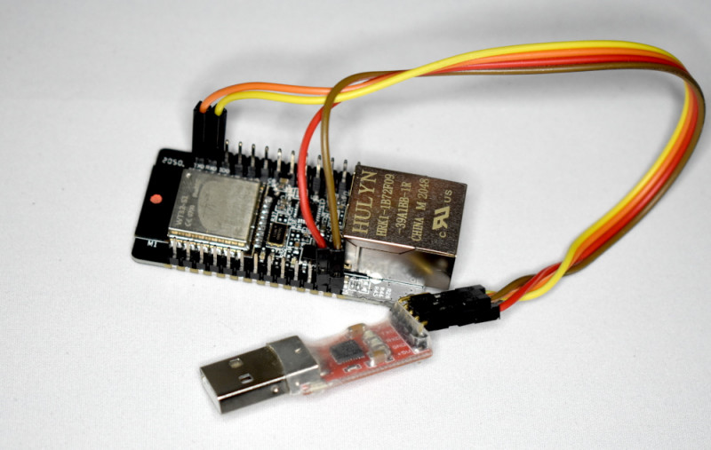
Плата сама по себе, и как к ней подключатся.
Сама плата, именуемая WT32-ETH01 от производителя с условным названием Wireless-tag. Если верить сайту производителя, то он выпускает модули на ESP32. В том числе — с лейблом Espressif :) И много чего еще. Рассматриваемая плата основана на модуле WT32-S1. Сайт вообще довольно мутный, но там можно скачать базовую документацию на эти модуль и плату. В документации есть кое-какая полезная информация: характеристики, распиновки. Из них становится понятно, что на плате размещены 4MB flash-памяти и микросхема PHY для Ethernet — LAN8720A.
Все сигналы с ESP32, которые выведены наружу сокращенно именуются как IO00-IO39.
Остальные — жестко завязаны на функционированиe Ethernet. Большинство сигналов подключено по типовой схеме.
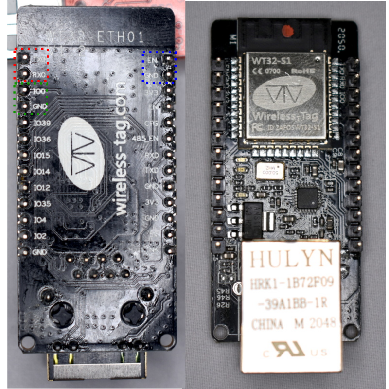
Подключение для прошивки делается так:
RXD0: TXD UART
TXD0: RXD UART
Для того чтобы прошить плату нужно замкнуть джампером нужные выводы (IO0 на GND) и передернуть питание либо «сбросить» ESP32 через вывод EN (коротко замкнуть EN на GND), и после этого взаимодействовать по UART. Каждый раз при прошивке.
Если сперва необходимо стереть всю flash-память, то после этой операции ESP32 нужно еще раз «сбросить», а потом уже прошивать.
На большинстве других плат этот процесс автоматизирован: GPIO00 и EN управляются сигналами соответственно DTR UART и RTS UART.
Конкретно для WT32-ETH01 нельзя все время подавать на IO0 «0» или «1». Для прошивки IO0 нужно «освободить», так как на этот же вход еще и подается тактовая частота 50Мгц с расположенного на плате генератора. Так же на плате реализовано управление работой этого генератора посредством GPIO16. Если там логическая «1» то по тактовая частота подается как на IO0, так и на LAN8720A. В режиме прошивки там «0» — частота не генерируется, ничего не «коротит», и нет риска что режим прошивки «сам по себе» запустится. На других платах с Ethernet тактовую частоту ESP32 может генерировать самостоятельно, причем это могут быть как GPIO00 в режиме выхода, но так же GPIO16 или GPIO17. Управление питанием может быть, например на GPIO12. Либо вообще не реализовано.
Сигнал RTS подавать на EN, в принципе ничего не мешает, но иногда придется все таки вручную «сбрасывать».
И еще, особая тонкость: микросхема PHY может иметь свой логический адрес, от 0 до 31. Конкретно у LAN8720A этот адрес либо 0, либо 1, (этот адрес задается «железно» одним из выводов LAN8720A). Конкретно на WT32-ETH01 — это адрес 1. А у большинcтва других плат — 0.
Такие вот тонкости реализации приводят к тому, что прошивки надо программно конфигурировать под каждое схемотехническое решение отдельно.
Поэтому запомним магические слова:
PHY type: 0 — LAN8720A (LAN8710)
PHY addr: 1
PHY power (pin): 16
PHY clock: 0 — CLOCK_GPIO0_IN
Так же на плате есть выводы:
RXD — GPIO5
TXD — GPIO17
К ним, в принципе, так же можно подключать UART, но они более интересны тем что к ним подключены два светодиода (инверсно) и этими светодиодами можно помигать.
Выход LNK подключен к соовт. выводу LAN8720A для индикации состояния подключения Ethernet, т.е. программно им управлять не получится.
Софт для ПК
Официальных прошивальщиков два:
1) esptool который работает из командной строки «откуда угодно», так как написан на Python (esptool.py), но ее можно найти и в виде исполняемого файла Windows (esptool.exe).
2) Flash dowload tool, с графическим интерфейсом, который работает под Windows.
Как уже говорилось выше, прошивка может состоять из нескольких файлов, каждый из которых прошивается по определенному адресу в памяти. И эти адреса — нужно знать, у каждой прошивки есть свои тонкости в этом вопросе.
У сложных прошивок есть свой прошивальщик, который эти адреса знает, но «внутри» них обычно содержится тот же esptool, в целом они малополезны.
Так же создатели прошивки могут привести свои рекомендации по прошивке, обычно это esptool с параметрами.
Еще пригодится программа-терминал.
Для оригинальной прошивки, а также некоторых других лучше будет воспользоваться программой Putty — c последовательным портом она тоже работает, при этом Putty «знает» коды переключения цветов в текстовом режиме и протокол работы ESP32 будет разноцветным. Но у Putty есть такая тонкость — по нажатию «Enter» передается код [CR], а некоторые прошивки требуют в конце команды исключительно код [LF].
В этом случае более удобна будет программа Termite, которая хорошо заточена на работу именно с COM портом, либо Terminal by Br@y++, но они только под Windows.
Для Linux есть gtkterm.
Оригинальная прошивка
Разговор про прошивки придется начинать с конца. Дело в том, что некоторые прошивки поставляются только в виде исходных кодов, их надо отконфигурировать на нужную плату и откомпилировать.
Но сперва хочется рассказать — что можно от этой платы получить, а потом уже — как это получить. Поэтому в описаниях будет несколько «программистских» слов, а в следующем разделе — их «расшифровка».
В документации написано, что плата по умолчанию прошита якобы типовой прошивкой ESP-AT, исполняющей т.н. AT-команды, которые на плату передаются по интерфейсу UART. При этом общение с ESP32 в форме текстового диалога с командами и ответами, якобы они стандартные.
Для работы с оригинальной прошивкой, USB->UART необходимо подключится к другим контактам:
RXD: TXD UART
TXD: RXD UART
Попытки взаимодействия с предустановленной прошивкой вызывают большую печаль. Перечень команд конкретно для данной прошивки находится не сайте производителя, а у Seed studio. И этот файл — просто перевод гуглом с китайского на английский. Собственно команд в этом файле (и прошивке) очень мало: никакого управления Bluetooth, периферией, можно только байты по Wifi и Ethernet попередавать. Фактически, даже команды из этого файла не всегда работают, все очень малоинформативно.
На самом деле, подробный протокол работы модуля выводится все на тот же TXD0, если подключить туда usb-uart, то можно увидеть много интересного.
Оригинальная прошивка поддерживает режим «обновления по воздуху» — OTA. Для обновления сперва нужно AT-командами заставить запомнить IP адрес роутера с интернетом. После чего, нужно замкнуть джемпером IO2 на GND и сделать «сброс» платы. Плата помигает светодиодами, но признаков обновления не выскажет.
А вот в протоколе будет что видно, что плата лезет на сервер обновлений к некой софтверный фирме, и более свежей прошивки там не находит. Надо что-то делать своими силами.
Собрать свежую официальную прошивку ESP-AT получилось только под Linux, процедура сборки прошивки немного нестандартная. Но прошивку эту мало просто собрать, ее еще нужно «допилить» для работы с рассматриваемой платой! Интересно, конечно, протестировать возможности ESP32, но практического смысла в этом мало.
Специализированные прошивки
Собственно говоря, за границами обзора остались большое число прошивок ESP32, которые работу с Ethernet не поддерживают вообще, ну или надо ее «прикручивать», к тому же для масштабного проекта на рассматриваемой плате маловато GPIO. А так, есть и системы управления станками, 3D принтерами, и всякие языки программирования.
Хорошо работать с WT32-ETH01 «научились» в первую очередь системы управления «умным» домом, или еще чем нибудь «умным». Они позволяют через сеть (Интернет) опрашивать разнообразные датчики и управлять различными нагрузками — как через браузер, так и, при помощи стандартных протоколов mqtt и modbus, из систем управления более высокого уровня. И их несколько:
1)ESPeasy Mega
Прошивка, кажется, больше ориентированная чтобы подключать разнообразные датчики и передавать их по большому количеству протоколов, не только mqtt. Я не заметил возможности просто «поморгать светодиодом» ни с WEB-интерфейса, ни при помощи протоколов.
Прошивка предлагается откомпилированной в нескольких версиях: test, custom, normal, которые отличаются количеством поддерживаемых датчиков.
Естественно, для платы с Ethernet нас интересуют версии прошивки с -ETH в названии.Прошивки "-factory" в конце названия предназначены для прошивки в «чистую» систему, с адреса в 0x0000, без "-factory" — для обновления, либо по OTA, либо для прошивки по адресу 0x1000.
По умолчанию Ethernet в прошивке отключен, нужно ее настроить на подключение к WiFi (роутеру или точке доступа), зайти в WEB-интерефейс, и там настроить Ethernet.
После перезагрузки, прошивка либо «увидит» Ethernet, либо подключит WiFi — это меняется в настройках.
Одна проблема — надо задать SSID и пароль для WiFi. Официально для этого предназначена утилита ESP easy flasher. Но утилитка уж больно чуднАя. Для начала она попросит вручную установить в систему пару шрифтов (из ее папки). После чего она попробует стереть память ESP32, прошить прошивку и сделать первоначальные настройки, в автоматическом режиме. А если автоматического режима на плате нет, поэтому придется мудрить с настройками и сбросом.
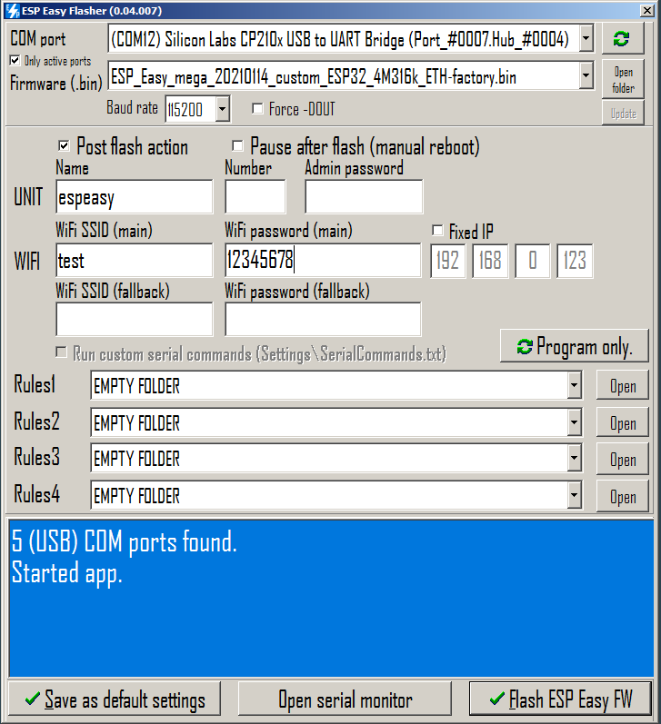
Но есть способ проще — нужно использовать Termite, не уверен что это получится с другими программами.
Прошивка, хотя и будет постоянно требовать подключения WiFi (постоянно писать в лог WiFi connecting...), но команды воспринимает.
Команды:
WifiSSID test
WifiKey 12345678
wificonnect
настроят работу WiFi, девайс получит адрес по DHCP и по этому адресу будет доступен WEB-интерфейс с настройками, в т.ч. Ethernet.
Так же ESPeasy умеет запустить свою точку доступа для настройки.
Но главное, чтобы стал доступен WEB-интерфейс, в котором можно задать настройки Ethernet, после чего этот интерфейс станет приоритетным.
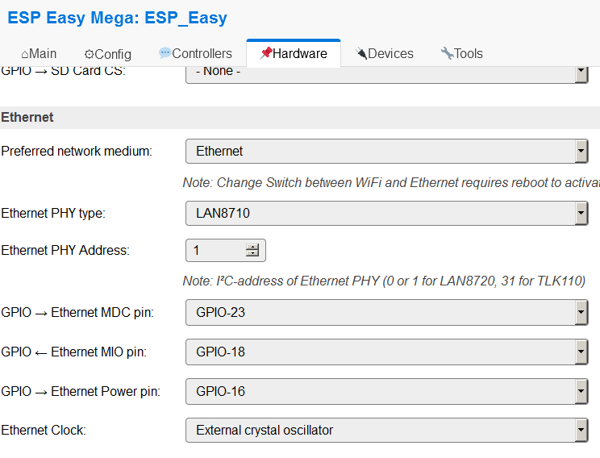
2)Tasmota
Прошивка так же позволяет подключить всякие датчики, но главное — исполнительные устройства, и управлять ими не только через mqtt, но и через браузер. Можно, например, «ползунком» управлять яркостью светодиодов на WT32-ETH01.
В «базовой комплектации» Tasmota c Ethernet не работает — опция отключена. Нужно ее включить и скомпилировать прошивку. К счастью, один добрый человек периодически делает это за нас. Нужно только скачать файлы:
https://github.com/Jason2866/Tasmota-specials/raw/firmware/firmware/tasmota32/other/tasmota32-Ethernet.bin
https://github.com/Jason2866/Tasmota-specials/raw/firmware/firmware/tasmota32/ESP32_needed_files/boot_app0.bin
https://github.com/Jason2866/Tasmota-specials/raw/firmware/firmware/tasmota32/ESP32_needed_files/bootloader_dout_40m.bin
https://github.com/Jason2866/Tasmota-specials/raw/firmware/firmware/tasmota32/ESP32_needed_files/partitions.bin
И прошить их, как указано на картинке:
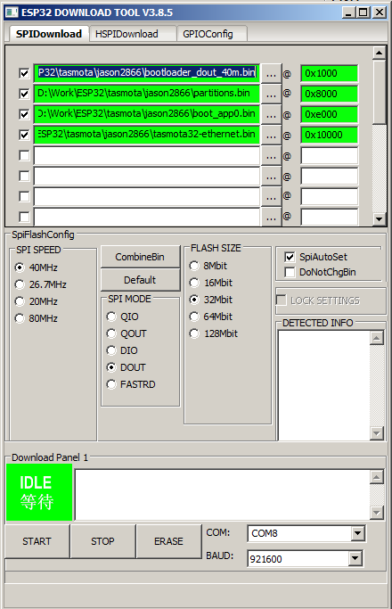
По умолчанию Tasmota ничего не знает о той плате на которой она запущена, да и настроек WiFi у нее нет. Поэтому она запустит свою точку доступа (без пароля), к ней надо подключится, зайти в WEB-интерейс, там установить имя и пароль для точки доступа к которой будет подключатся Tasmota, подключится к этой точке, и уже там вбить настройки. На самом деле, у Tasmota есть пять вариантов для поведения когда нет WiFi, но суть примерно одинакова.
Для описания платы применяется специальный перечень (template) в котором указано назначение выводов для конкретно WT32-ETH01. Его можно задать в виде текстовой строки, и, при желании, донастроить «кнопками».
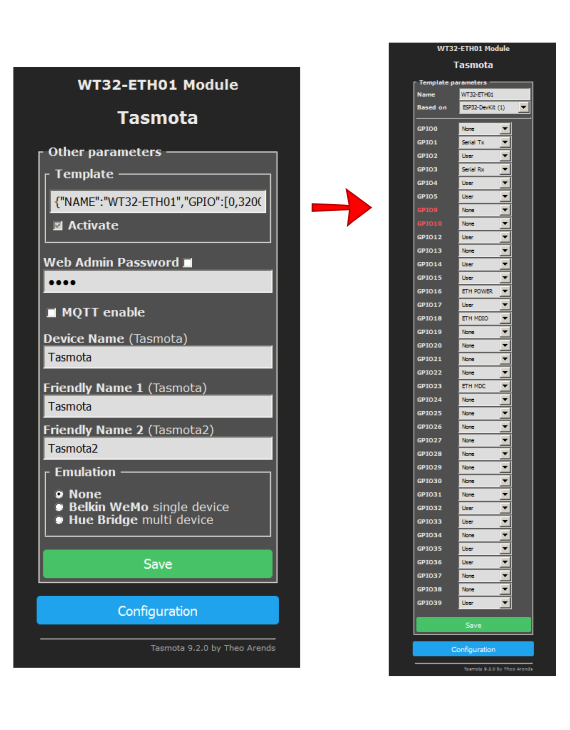
Но есть способ сделать все это гораздо быстрее: при помощи Termite (Tasmota требует кода [LF] в конце команды) ввести одну большую (составную) команду.
backlog template {"NAME":"WT32-ETH01","GPIO":[0,3200,1,3232,1,1,0,0,1,0,1,1,5536,1,5600,0,0,0,0,5568,0,0,0,0,0,0,0,0,1,1,0,1,1,0,0,1],"FLAG":0,"BASE":1}; EthAddress 1; EthType 0; EthClockMode 0; module 0;
после чего в протоколе должно появится
00:01:37.475 CMD: backlog template {"NAME":"WT32-ETH01","GPIO":[0,3200,1,3232,1,1,0,0,1,0,1,1,5536,1,5600,0,0,0,0,5568,0,0,0,0,0,0,0,0,1,1,0,1,1,0,0,1],"FLAG":0,"BASE":1}; EthAddress 1; EthType 0; EthClockMode 0; module 0;
00:01:37.506 RSL: RESULT = {"NAME":"WT32-ETH01","GPIO":[0,3200,1,3232,1,1,0,0,1,0,1,1,5536,1,5600,0,0,0,0,5568,0,0,0,0,0,0,0,0,1,1,0,1,1,0,0,1],"FLAG":0,"BASE":1}
00:01:37.706 RSL: RESULT = {"EthAddress":1}
00:01:37.916 RSL: RESULT = {"EthType":0}
00:01:38.126 RSL: RESULT = {"EthClockMode":0}
00:01:38.336 RSL: RESULT = {"Module":{"0":"WT32-ETH01"}}
23:28: 00:01:39.633 APP: Restarting
ets Jun 8 2016 00:22:57
rst:0xc (SW_CPU_RESET),boot:0x13 (SPI_FAST_FLASH_BOOT)
configsip: 0, SPIWP:0xee
clk_drv:0x00,q_drv:0x00,d_drv:0x00,cs0_drv:0x00,hd_drv:0x00,wp_drv:0x00
mode:DIO, clock div:2
load:0x3fff0018,len:4
load:0x3fff001c,len:1044
load:0x40078000,len:8896
load:0x40080400,len:5828
entry 0x400806ac
00:00:00.033 UFS: FlashFS mounted with 48 kB free
00:00:00.082 CFG: Loaded from File, Count 58
00:00:00.096 QPC: Count 1
00:00:00.104 Project tasmota Tasmota Version 9.2.0.4(Ethernet)-1_0_5_RC6(2021-01-27T08:04:01)
23:33: 00:00:04.013 ETH: Connected at 100Mbps Full Duplex
00:00:04.327 HTP: WEB server active on tasmota_xxxx_eth with IP address yyy.yyy.yyyy.yyy
00:00:04.331 RSL: INFO1 = {"Module":"WT32-ETH01","Version":"9.2.0.4(Ethernet)","FallbackTopic":"cmnd/DVES_625664_fb/","GroupTopic":"cmnd/tasmotas/"}
00:00:04.339 RSL: INFO2 = {"WEBServerMode":"Admin","Hostname":"tasmota_xxxxxx_eth","IPAddress":"yyy.yyy.yyyy.yyy"}
00:00:04.349 RSL: INFO3 = {"RestartReason":"Software reset CPU"}
то есть TAsmota запустила Ethernet и готова работать через него.
Можно даже настройки WiFi не задавать, и вообще отключить его командой
wifi 0
а можно и настроить. А главное, поуправлять светодиодами.
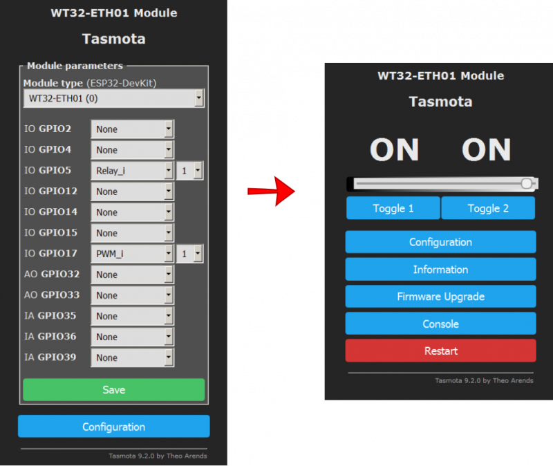
3)Esphome
В этой прошивке улучшен WEB-интерфейс, и она предлагается как последователь tasmota.
Основная тонкость заключается в том что Esphome берет свою конфигурацию из файла, и на его основе компилирует прошивку.
А это уже по сути программирование, и оно будет рассмотрено далее.
Пример конфига для платы:
esphome:
name: test
platform: ESP32
board: esp-wrover-kit
Ethernet:
type: LAN8720
mdc_pin: GPIO23
mdio_pin: GPIO18
clk_mode: GPIO0_IN
phy_addr: 1
power_pin: GPIO16
switch:
- platform: gpio
name: "Pin GPIO5"
pin: GPIO5
- platform: gpio
name: "Pin GPIO17"
pin: GPIO17
# Enable logging
logger:
# Enable Home Assistant API
api:
reboot_timeout: 0s
ota:
WEB_server:
port: 80
В результате чего, без дополнительных настроек, запуститься Ethernet с WEB-интерфейсом, и там будут две кнопочки для управления светодиодами. Есть опции для настройки внешнего вида этого интерфейса.
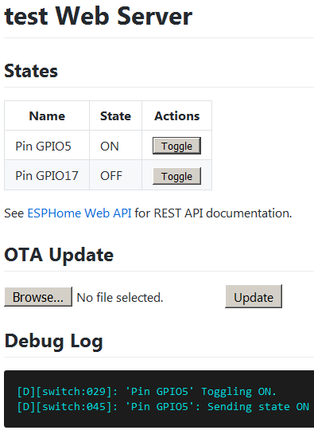
4)MicroPyton
Нужна версия with ESP-IDF v3.x, без spiram.
Прошивка «монолитная», прошивается как единый кусок по адресу 0x1000.
Работа с Python осуществляется через последовательный интерфейс, можно использовать Putty.
MicroPyton знает про Ethernet, нужно только его запустить скриптом:
import machine
import network
lan = network.LAN(mdc = machine.Pin(23), mdio = machine.Pin(18), power= machine.Pin(16), phy_type = network.PHY_LAN8720, phy_addr=1, clock_mode=network.ETH_CLOCK_GPIO0_IN)
lan.active(1)
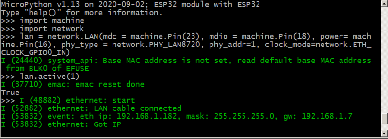
можно поуправлять светодиодами на плате:
pin17 = machine.Pin(17, machine.Pin.OUT)
pin17.value(1)
Для MicroPython есть такая штука uPyCraft IDE
которая позволяет общаться с платой не просто через консоль, а пользоваться вcтроенным редактором и доступом к памяти платы.
Она же и прошивку может залить, только не надо пользоваться «встроенной» — она 2017 года, а скачать свежую по ссылке выше.
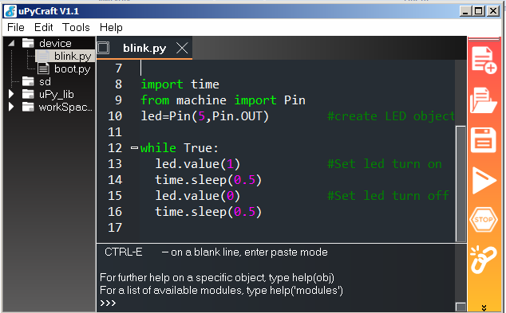
5)Lua — есть как минимум 3 прошивки, поддерживающие Lua и две из них точно поддерживают Ethernet: NodeMCU и Lua-RTOS. Отличаются они, в частности, принципами конфигурирования этого самого Ethernet.
Lua-RTOS имеет прошивку под каждую плату индивидуально, и WT32-ETH01 в этом перечне нет, и ничего похожего нет, в связи с вышеупомянутыми особенностями. Можно взять исходники, создать файл конфигурации нужной платы и откомпилировать. Вроде как, к этой прошивке можно «прикрутить» возможность визуального (графического) программирования, но мне стало влом компилировать эти прошивки.
NodeMCU Lua так же распространяется в исходниках, но можно воспользоваться сервисом, который «соберет» прошивку под индивидуальные нужды. Шить ее нужно с адреса 0x0.
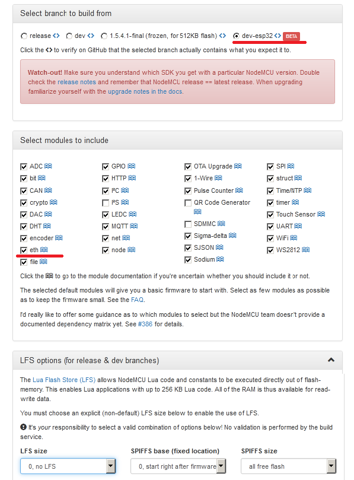
Для того, чтобы запустить Ethernet на данной прошивке нужно запустить скрипт:
eth.init({phy = eth.PHY_LAN8720, addr = 1, clock_mode = eth.CLOCK_GPIO0_IN, mdc = 23, mdio = 18, power = 16})
ну и далее, согласно инструкции.
6) WifI IOT — еще один сервис для автоматизированной сборки прошивки. С очень большим числом опций. Многие из которых активируются платно (т.е. за деньги). Так же поддерживает свой прошивальщик для ESP32, ориентированный на работу со «своей» прошивкой. Ethernet поддерживается, но настроек мало — на текущий момент Ethernet WT32-ETH01 с данной прошивкой не запускается.
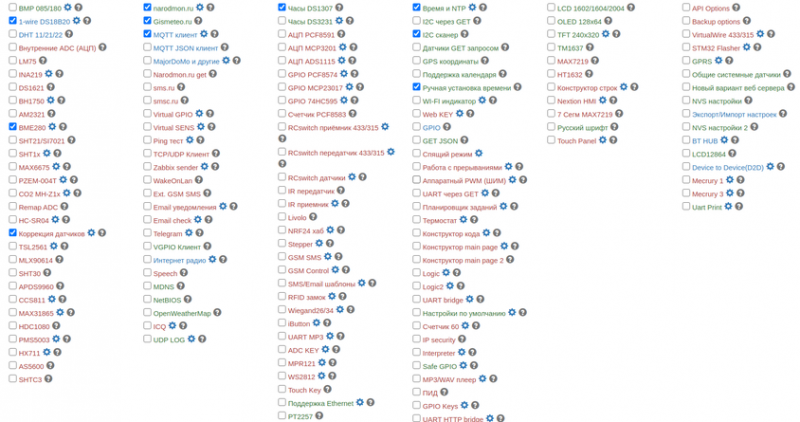
Возможности для программирования
Arduino
В первую очередь это типовая программная «обертка» над периферией очень разных микропроцессорных контроллеров, которая позволяет написать программу, которую, в конечном итоге, можно запустить на любом из этих контроллеров. В теории.
В настройках arduino необходимо добавить файл конфигурации
https://raw.githubusercontent.com/espressif/arduino-ESP32/gh-pages/package_ESP32_index.json
После чего базовый набор для ESP32 — компилятор, некоторые библиотеки и утилиты загрузятся из Интернета сами.
Для рассматриваемой платы есть, в том числе, примеры для работы с Ethernet — нужно только их отконфигурировать.
Другие библиотеки необходимо искать и устанавливать самостоятельно, многие из них заточены именно под ESP32.
Официальный путь Espressif IoT Development Framework (esp-idf)
Espressif предлагает несколько путей создания прошивки, хотя, по сути, все они — вариации одного и того же.
В любом случае необходимо скачать непосредственно esp-idf, официально это предлагается сделать с Github либо через git.
И это будут только библиотеки, они будут привязаны к конкретной версии компилятора. Т.е. для работы самого свежего esp-idf требуется свежий компилятор.
Arduino для ESP32, кстати, тоже использует старую и обрезанную версию esp-idf.
Настройки проекта часто (но не всегда) хранятся в файле sdkconfig, который можно редактировать как в текстовом редакторе, но и при помощи стандартной (для Linux) псевдографической утилиты menuconfig.
Как оказалось, много крупных проектов для сборки «хотят» очень конкретную версию esp-idf и утилит для сборки, и не самую новую. Зачастую, они автоматически подгружают более полугигабайта файлов «себе» в папку. И в этом есть резон — esp-idf иногда переделывают довольно сильно, в esp-idf v4.x были сильно изменены функции Ethernet, и «старые» исходники просто не компилируются.
Среда для сборки ESP-AT — постоянно проверяет обновления esp-idf, и не c официального github. Причем там настолько хитрые скрипты, что под Windows они не работают, опять же из-за ограничений командной строки, и доработать их не вот непросто.
Lua-RTOS так же привязана к не самой новой версии esp-idf и компиляторов, но ее можно собрать как под Linux, так и под Windows, в среде MSYS2
В целом, вопрос очень обширный. Для простой сборки готового проекта неплохо иметь быстрый процессор, быстрый интернет, и желательно Linux. На сайте espressif стоит автоматический ограничитель скорости скачивания, а файлы там большие — так что, нужно еще и терпение.
Platformio
Комбинированный вариант среды для сборки программных проектов, сам по себе написанный на языке Python.
В принципе в Platformio возможно собрать проект как для Arduino, так и для esp-idf.
При этом «магическим» образом будут скачены все недостающие файлы: библиотеки, компиляторы, прошивальщики — все что сыщется нужного на сайте Platformio само по себе «закачается в папку .platformio
Находятся там файлы не первой свежести, хотя, с другой стороны — работает и работает, причем „само“. Нужно только произвести настройки в файлах platformio.ini, а так же в конфигурационных .h файлах.
Так же можно „прикрутить“ редактор исходников и отладчик „профессионального“ уровня.
Как оказалось немало сложных проектов используют библиотеки arduino и Platformio в качестве среды для сборки.
В рассматриваемом случае это и Tasmota и ESPeasy и отдельно — Esphome.
Отдельно потому что в основе Esphome — еще один скрипт на Python.
На основе создаваемого пользователем .yaml скрипта и исходных файлов (сам скачает!) Esphome сгенерирует готовый, настроенный проект для Platformio, сам „заставит“ Platformio скомпилировать этот проект, и „залить“ прошивку в плату.
Краткое руководство выглядит так:
pip3 install esphome
Далее все компилируется и прошивается буквально одной командой:
esphome script.yaml upload
Хороший такой способ программировать не программируя.
Выводы
Плата годная, брать можно :) В том случае, если нужно „поморгать лампочкой“ и при этом непременно по интерфейсу Ethernet — неплохой вариант, и уж точно дешевле любой „малинки“, поэтому эта плата и была куплена. Решение интересное, как с точки использования готового софта, так и для самостоятельного программирования — не надо сильно заморачиваться на то, как „прикрутить“ TCP и запустить простейший WEB-сервер. Хотя в целом альтернатив много.
�